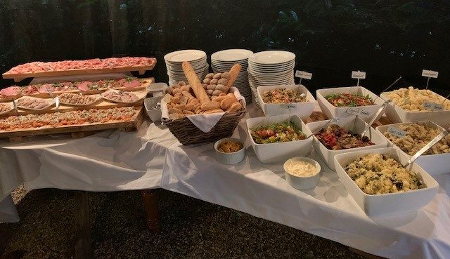

Buffetten
Een feestje, maar geen tijd om zelf het eten te verzorgen? Wij leveren koude en warme buffetten compleet verzorgd aan op een door u gekozen locatie. Van stamppotten tot sushi, borrelplanken of saladebuffet, geheel aan te passen aan uw wensen, ook bij diëten en allergieën.